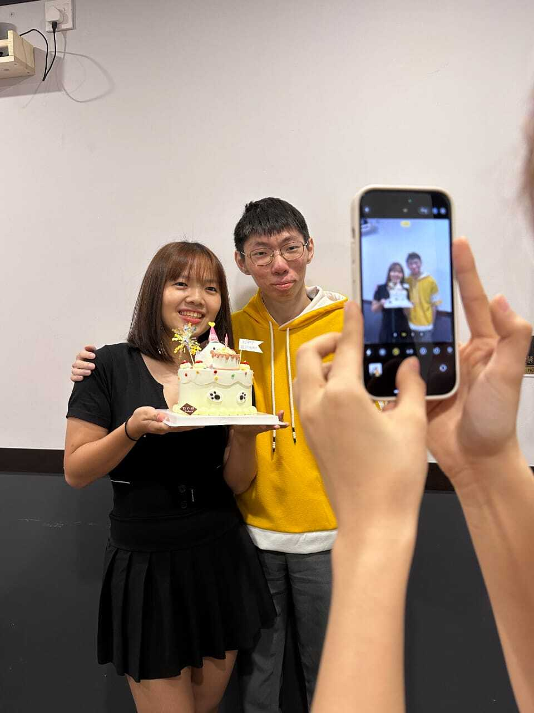
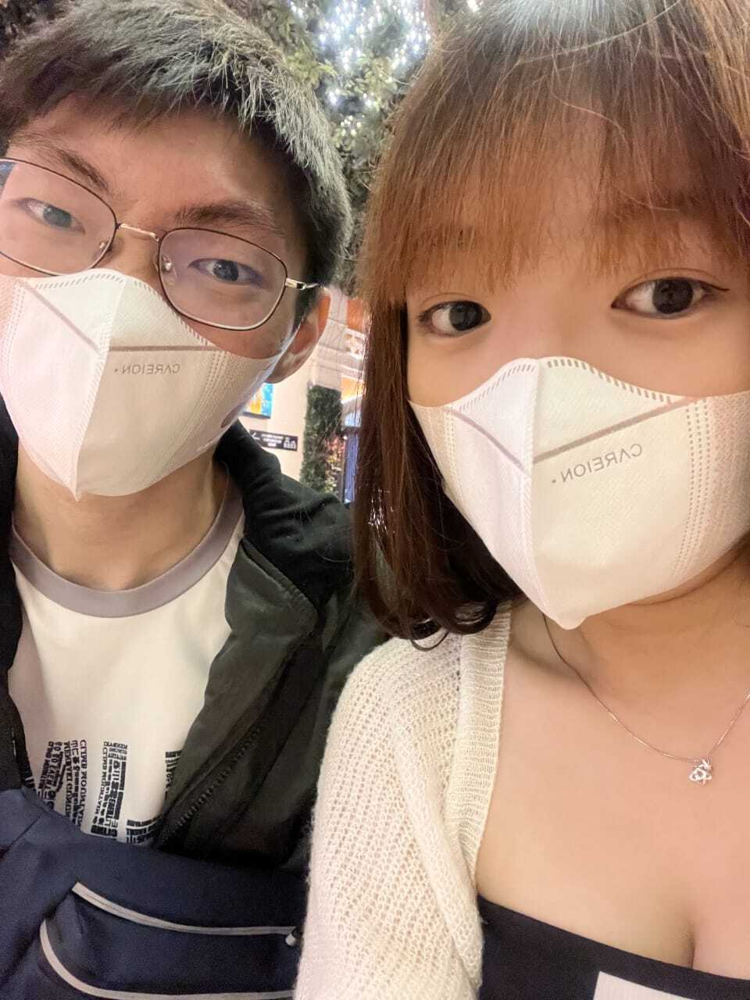
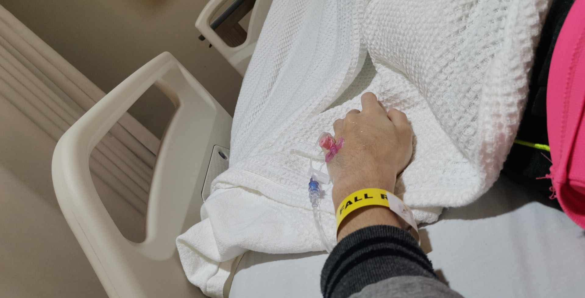
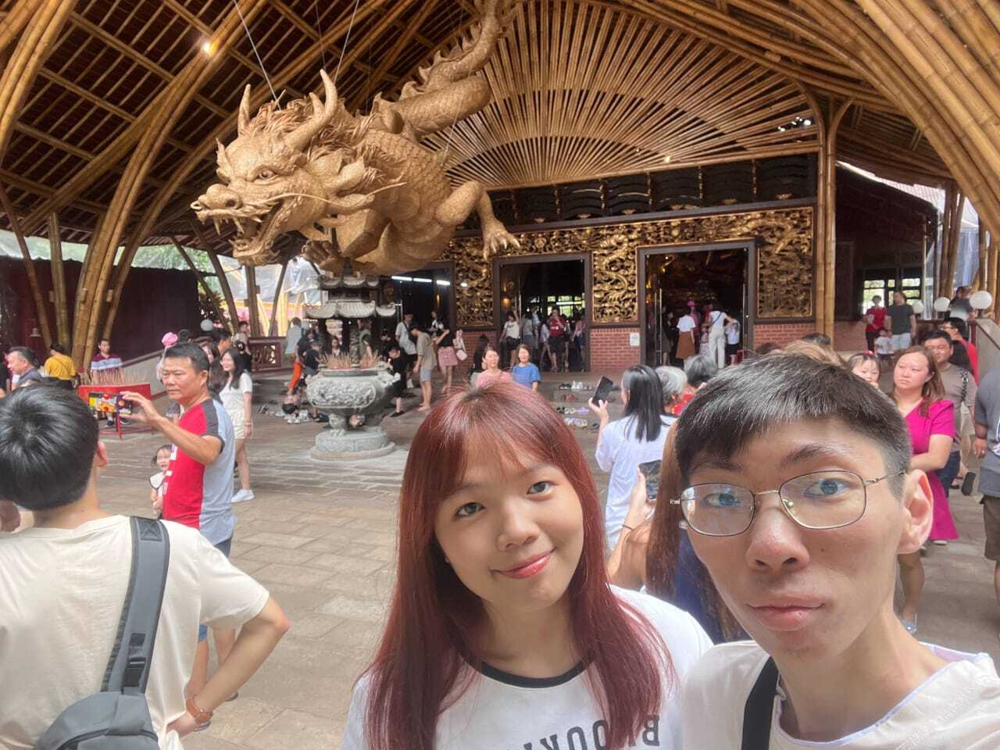
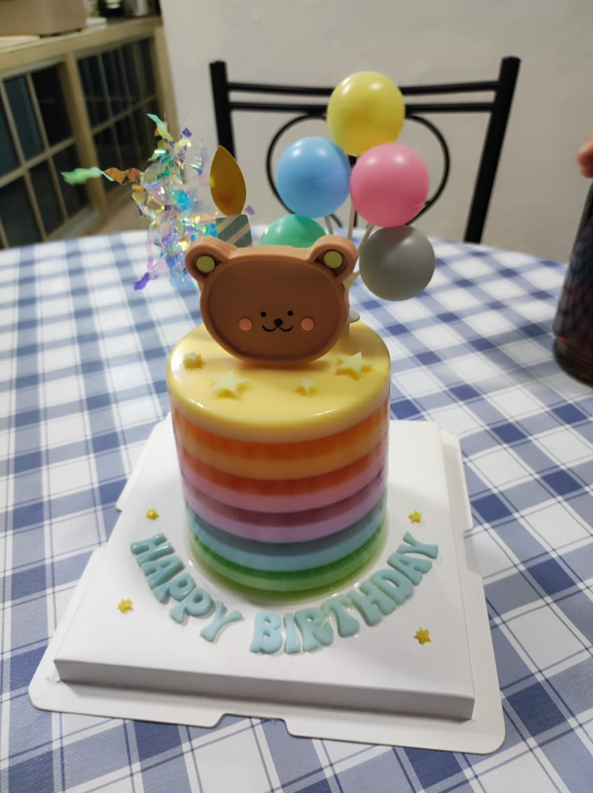
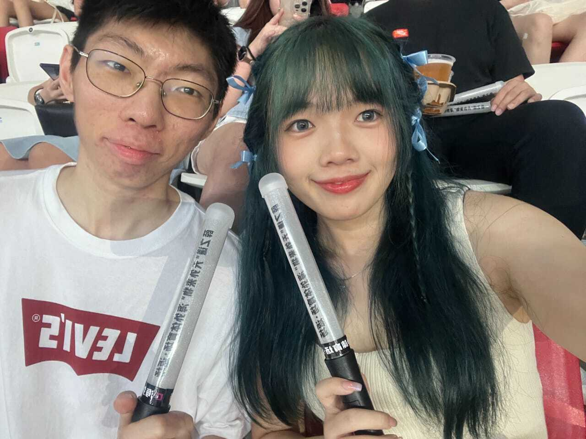
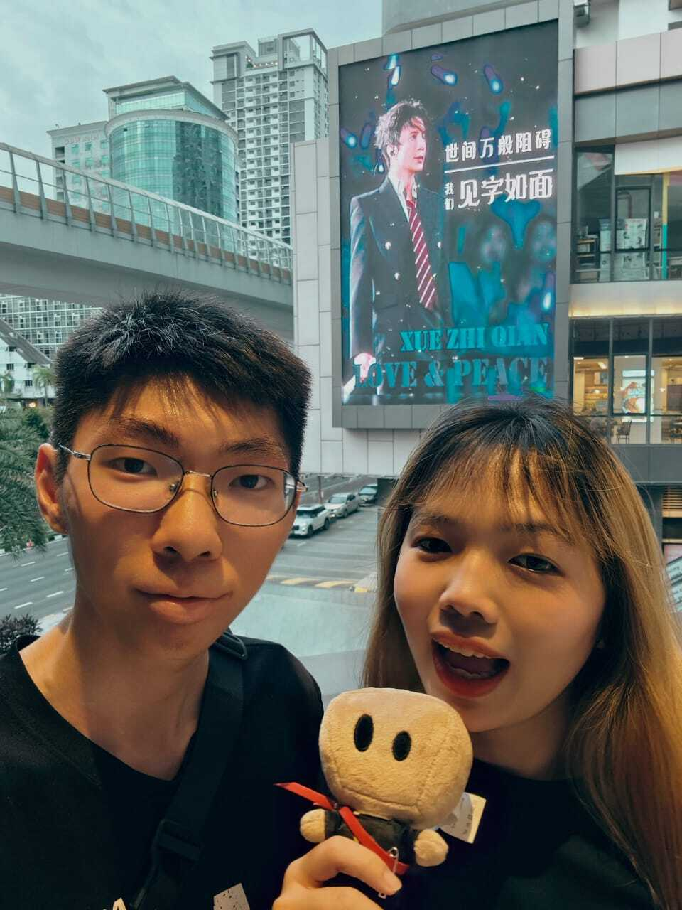
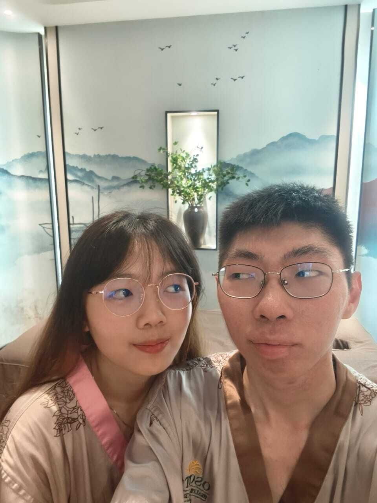
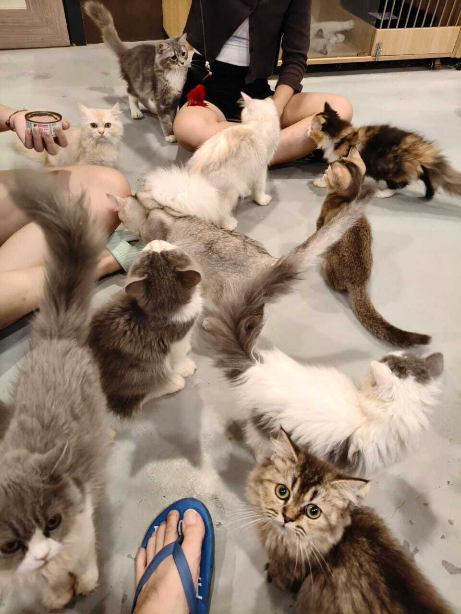

从遇见你开始，每一刻都值得记住
我们在Soul匹配到了，开始了我们的故事
那一天，我们决定在一起了。从网友变成情侣的关系，现在看回去还是会觉得挺突然。
我驱车从新山到永平，第一次驾远路去见一个人。玩了一趟Batu Pahat后，送你到家前我们在车上聊了很久。
我开始线上帮你补课数学，帮你准备应考SPM。
你第一次和朋友从永平打巴士下来玩，也是我第一次接触你的好朋友之一。
我去到永平和你的闺蜜们一起在韩式餐馆帮你庆祝生日。那也是我第一次接触你中学的闺蜜们

我们和你的朋友一起驾老白去居銮玩，然后落宿在一家修车厂楼上的酒店。那时窗外一直传来噪音，你还帮驾车累了的我盖着耳朵入睡。
我们一起去云顶玩，一起坐缆车，逛清水寺，晚上还买了自热火锅配茶仙子在房间里吃。冷冷的天配上这个真的是绝了！

每次去找你的隔天早上，其实都很想去你家对面的公园玩秋千。
你特地去定制了很可爱的小蛋糕一起庆祝，上面还有我们的名字缩写。
便血入院，医生检查后说是可能肿瘤。手术前一天你从永平独自一人搭巴士下来医院看我

虽然你已经回永平工作了，但还是每天陪着我，帮我转移注意力。所幸检查报告出来不是肿瘤，但我这一生需要和克罗恩战斗了，谢谢你也没有因此而把我视作累赘。
你收拾行李离开了从小住到大的家，来到这里和我一起生活。
我爸妈带我们去普陀村逛逛，那是在我康复后第一次去外面走走。

因为当时又没交通，你也不熟附近的路线。所以最后选择进入和我一样的公司。就这样从这天起，我们一起上下班。刚开始的几天，不懂电脑的你还因为倍感压力而落泪了，我一直相信你一定可以学会的。
你亲手用扭扭棒做了一个蛋糕，打开里面还有我们一路来的合照。这份礼物真的看得出你很用心了，到现在我们还摆在桌上。
因为病后不能吃太多奶油之类不消化的食物，所以你和我家人带了一个果冻蛋糕给我。对于我们家里生日就是买水果蛋糕这个传统持续了20多年的我来说，很新鲜哈哈哈。

去到新加坡见薛之谦，我们都是第一次看演唱会。很幸运看的是薛之谦的《天外来物》，你也从此开启了谦友的身份，去认识了很多一样喜欢薛之谦的人，交了很多朋友。

这是老薛的生日，谦友出巨资的波底的mall里放大屏为他庆生，我们也去凑了一波热闹。

去见Dior大颖，但当天人流量真的太可怕了，要进去要出去都难。虽然其实我主要是去看BBK的Lucas和Jia Wen哈哈哈。
因为薪水和待遇问题，再加上你亲戚的推波助澜，你选择从这间公司离职，去到新加坡打工。看房时还是和我这家公司的同事Darren & Yu Wei 去看的，最后选择了一间性价比最高的，房东人看起来也很不错。虽然持续的时间不长，但你能独自进出新加坡，独自上下班，对我来说你就很厉害了。
你入职了一家音响公司做客服，薪水有质的飞跃，公司待遇也不错，看到你这样我也很为你开心。虽然傻逼顾客无处不在，但公司上下一致对外，至少不用搞办公室政治还是挺好的。
为了庆祝你换了新工作，我定了OSOTO让我们两个一起放松一下。

因为车不够用，我们决定出一辆便宜的新车作为代步工具，开始了我们的车奴身份。我对号码没有要求，所以听你的选择了老薛生日的数字 1707。
Kai Le下来新山庆祝生日，我们私心安排了一个猫咪爱好者的天堂。真的太多喵了。
